Candidate List 20260818Last night — ZTF: 4,115 passed basic cuts (300 young) · LSST: 0 passed basic cuts (0 young)Previous Day Next Day
Section 1: New Sources (age<1d) Section 2: Old (1-5d) sources observed last nightplaceholder
Section 1: New Afterglow/FBOT Cands Last Night (3)
1. [ZTF] ZTF26abpfeae (Afterglow?) [Back to Top] [Share] [Trigger Swift] [Fritz Alert] [Fritz Source] [Lasair]RA, Dec: 271.807, 10.84886 18h 7m13.68s, 10d50m55.90sGalactic (l, b): 37.77427, 14.67839 ext(g-r) = 0.149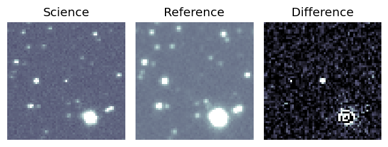
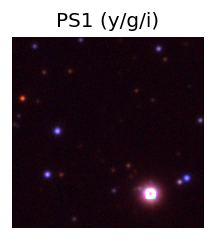

TESS: Sectors [ 80 118]
PS1: 0 sources in 3 arcsec
LegacySurvey: 0 sources in 3 arcsec
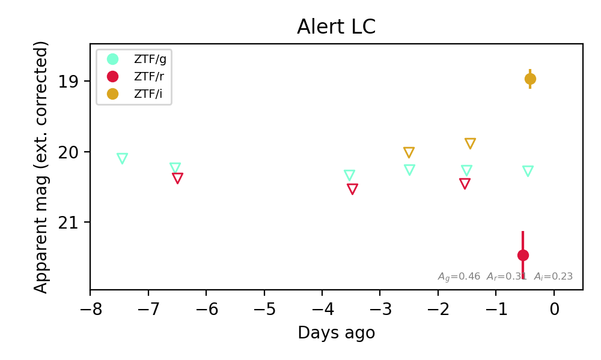
Extinction-corrected gr color:
From alerts: -1.2 +/- 99 mag
Extinction-corrected gi color:
From alerts: 1.31 +/- 99 mag
Extinction-corrected ri color:
From alerts: 2.51 +/- 0.37 mag
Consistent with synchrotron, g-r>0!
Rise Rate:
i: 0.88 mag/day
Fade Rate:
2. [ZTF] ZTF26abphuov (Afterglow?) [Back to Top] [Share] [Trigger Swift] [Fritz Alert] [Fritz Source] [Lasair]RA, Dec: 9.93228, 61.41546 0h39m43.75s, 61d24m55.64sGalactic (l, b): 121.53143, -1.42445 ext(g-r) = 1.109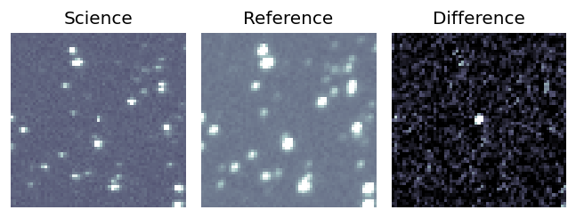
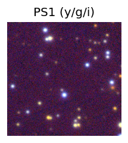

TESS: Sectors [17 18 24 58 78 85]
PS1: 0 sources in 3 arcsec
LegacySurvey: 0 sources in 3 arcsec
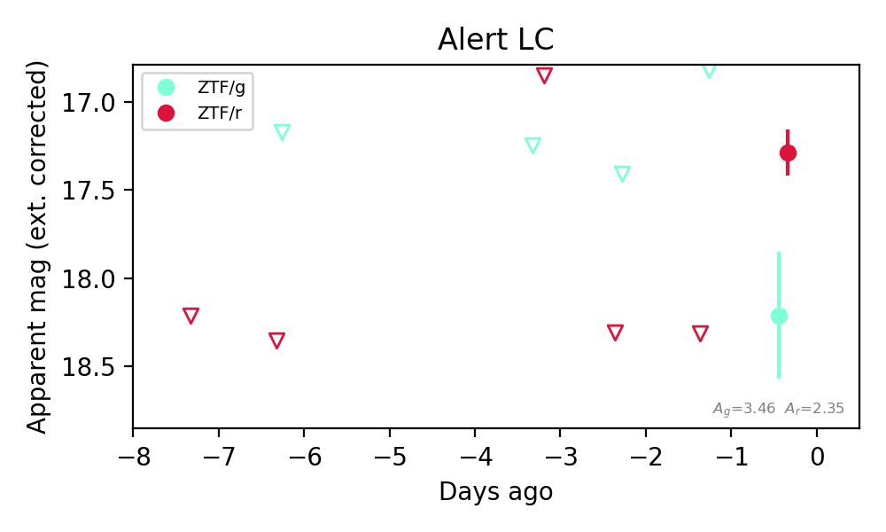
Extinction-corrected gr color:
From alerts: 0.92 +/- 0.38 mag
Consistent with synchrotron, g-r>0!
Rise Rate:
r: 1.0 mag/day
Fade Rate:
3. [ZTF] ZTF26abphwjb (Afterglow?) [Back to Top] [Share] [Trigger Swift] [Fritz Alert] [Fritz Source] [Lasair]RA, Dec: 3.50798, 64.22536 0h14m1.91s, 64d13m31.29sGalactic (l, b): 118.87856, 1.64839 ext(g-r) = 1.497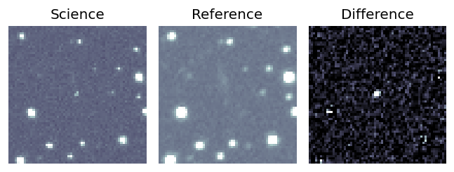
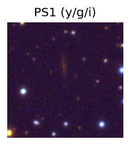

TESS: Sectors [17 18 24 58 78 85]
PS1: 0 sources in 3 arcsec
LegacySurvey: 0 sources in 3 arcsec
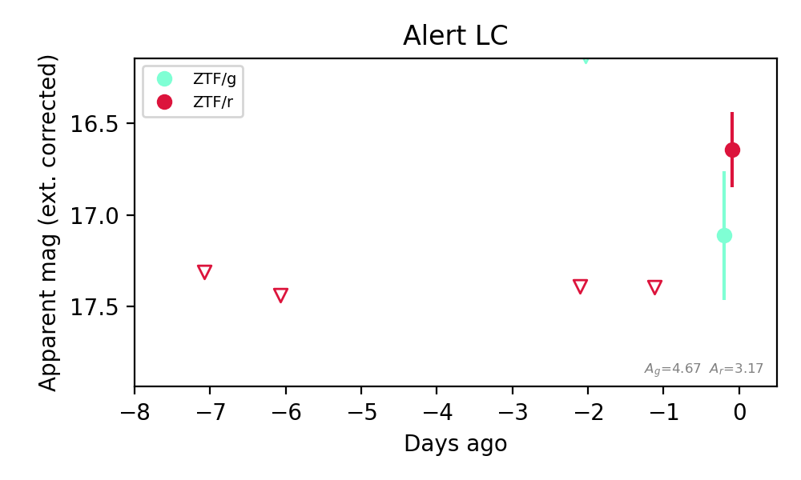
Extinction-corrected gr color:
From alerts: 0.47 +/- 0.41 mag
Consistent with synchrotron, g-r>0!
Rise Rate:
r: 0.73 mag/day
Fade Rate:
Section 2: Older Sources Observed Last Night (17)
0. [ZTF] ZTF26abnktnq (Afterglow?FBOT?) [Back to Top] [Share] [Trigger Swift] [Fritz Alert] [Fritz Source] [Lasair]RA, Dec: 36.63538, 31.93764 2h26m32.49s, 31d56m15.49sGalactic (l, b): 145.45799, -26.74061 ext(g-r) = 0.079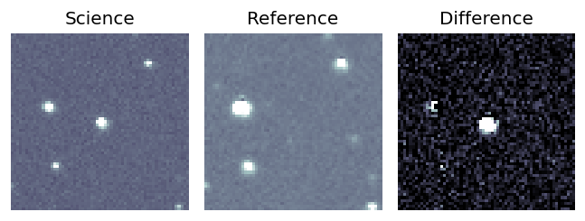
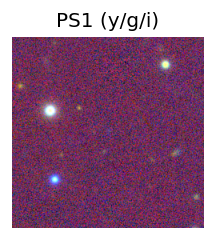
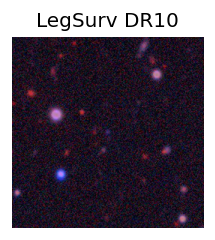
TESS: Sectors [18 58 85]
PS1: 0 sources in 3 arcsec
LegacySurvey: 1 sources in 3 arcsec Closest: d = 0.12 arcsec, 142.9 deg (east of north) photoz=1.15 (68% bounds 0.61, 1.4), type=REX peak abs mag (ext. corrected) = -27.94 (68% bounds -26.26, -28.47)
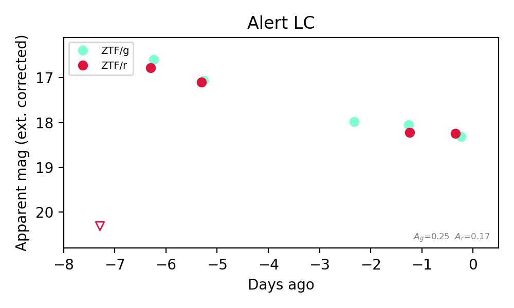
Extinction-corrected gr color:
From alerts: -0.04 +/- 0.09 mag
Consistent with synchrotron, g-r>0!
Rise Rate:
r: 3.53 mag/day
Fade Rate:
g: 0.26 mag/day
r: 0.24 mag/day
1. [ZTF] ZTF26aboierm (Afterglow?) [Back to Top] [Share] [Trigger Swift] [Fritz Alert] [Fritz Source] [Lasair]RA, Dec: 10.82279, 41.44748 0h43m17.47s, 41d26m50.93sGalactic (l, b): 121.29239, -21.39833 ext(g-r) = 0.388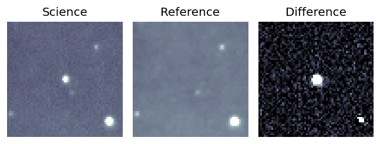
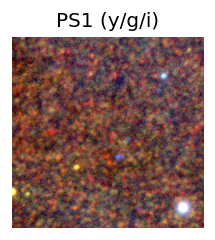

TESS: Sectors [17 57 84]
PS1: 0 sources in 3 arcsec
LegacySurvey: 0 sources in 3 arcsec
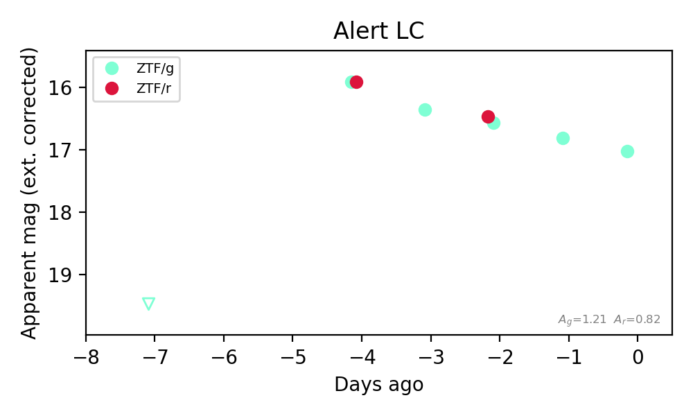
Extinction-corrected gr color:
From alerts: 0.09 +/- 0.06 mag
Consistent with synchrotron, g-r>0!
Rise Rate:
g: 1.21 mag/day
r: 0.95 mag/day
Fade Rate:
g: 0.3 mag/day
r: 0.3 mag/day
2. [ZTF] ZTF26abnozsn (Afterglow?) [Back to Top] [Share] [Trigger Swift] [Fritz Alert] [Fritz Source] [Lasair]RA, Dec: 330.39961, -0.84305 22h 1m35.91s, 0d-50m-34.98sGalactic (l, b): 58.5226, -41.54646 ext(g-r) = 0.08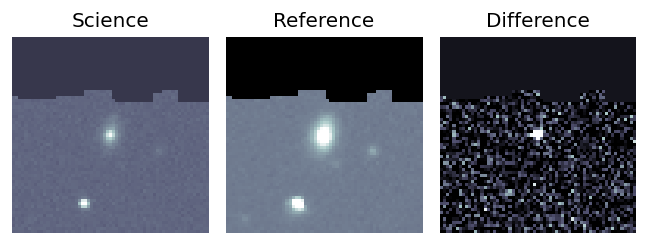
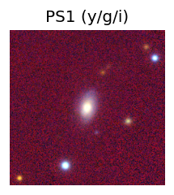
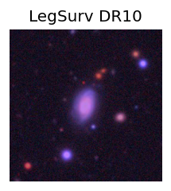
TESS: Sectors [ 42 55 82 92 116]
NED host (10 arcsec):Found WISEA J220135.92-005035.1 (G, 0.3″); NED spec-z: z=0.1100 [zflag SLS]; peak abs mag = -19.39
PS1: 0 sources in 3 arcsec
LegacySurvey: 1 sources in 3 arcsec Closest: d = 0.32 arcsec, 141.1 deg (east of north) photoz=0.09 (68% bounds 0.08, 0.1), type=SER peak abs mag (ext. corrected) = -18.98 (68% bounds -18.56, -19.24)
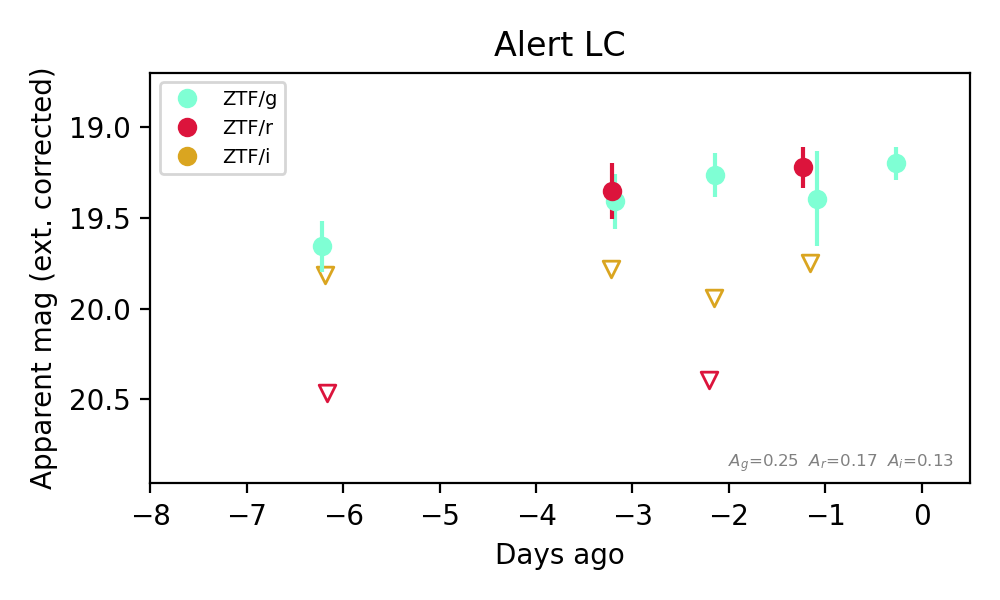
Extinction-corrected gr color:
From alerts: 0.17 +/- 0.29 mag
Extinction-corrected gi color:
From alerts: -0.36 +/- 99 mag
Extinction-corrected ri color:
From alerts: -0.53 +/- 99 mag
Consistent with synchrotron, g-r>0!
Rise Rate:
g: 0.17 mag/day
r: 1.2 mag/day
Fade Rate:
r: 1.04 mag/day
3. [ZTF] ZTF26abohdvv (FBOT?) [Back to Top] [Share] [Trigger Swift] [Fritz Alert] [Fritz Source] [Lasair]RA, Dec: 324.13425, -0.34617 21h36m32.22s, 0d-20m-46.23sGalactic (l, b): 54.39078, -36.1459 ext(g-r) = 0.054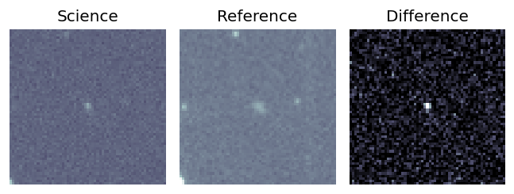
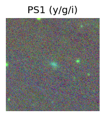
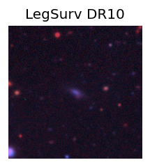
TESS: Sectors [55 82]
SDSS (<15 kpc):Found SDSS phot-z: z=0.25; peak abs mag = -21.59
PS1: 0 sources in 3 arcsec
LegacySurvey: 1 sources in 3 arcsec Closest: d = 0.46 arcsec, 236.9 deg (east of north) photoz=0.1 (68% bounds 0.07, 0.12), type=SER peak abs mag (ext. corrected) = -19.53 (68% bounds -18.68, -19.83)
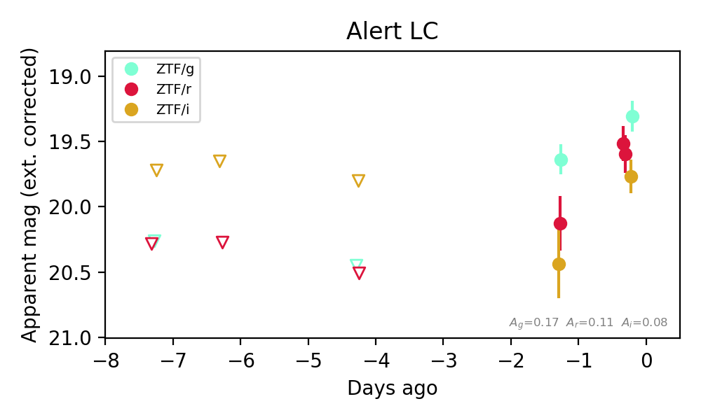
Extinction-corrected gr color:
From alerts: -0.31 +/- 0.12 mag
Extinction-corrected gi color:
From alerts: -0.45 +/- 0.18 mag
Extinction-corrected ri color:
From alerts: -0.14 +/- 0.18 mag
Consistent with synchrotron, g-r>0!
Rise Rate:
g: 0.28 mag/day
r: 0.2 mag/day
i: 0.26 mag/day
Fade Rate:
4. [ZTF] ZTF26abohnal (FBOT?) [Back to Top] [Share] [Trigger Swift] [Fritz Alert] [Fritz Source] [Lasair]RA, Dec: 324.16608, 0.11457 21h36m39.86s, 0d 6m52.46sGalactic (l, b): 54.88401, -35.91311 ext(g-r) = 0.066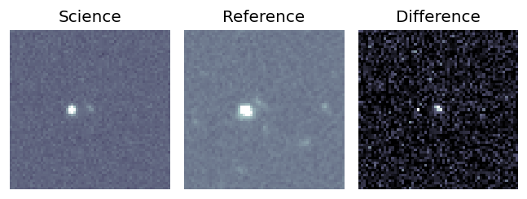
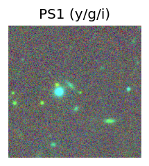
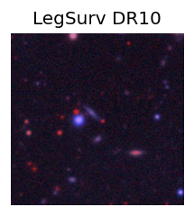
TESS: Sectors [55 82]
SDSS (<15 kpc):Found SDSS phot-z: z=0.20; peak abs mag = -20.55
PS1: 0 sources in 3 arcsec
LegacySurvey: 1 sources in 3 arcsec Closest: d = 0.89 arcsec, 268.3 deg (east of north) photoz=0.75 (68% bounds 0.32, 1.99), type=REX peak abs mag (ext. corrected) = -23.99 (68% bounds -21.77, -26.58)
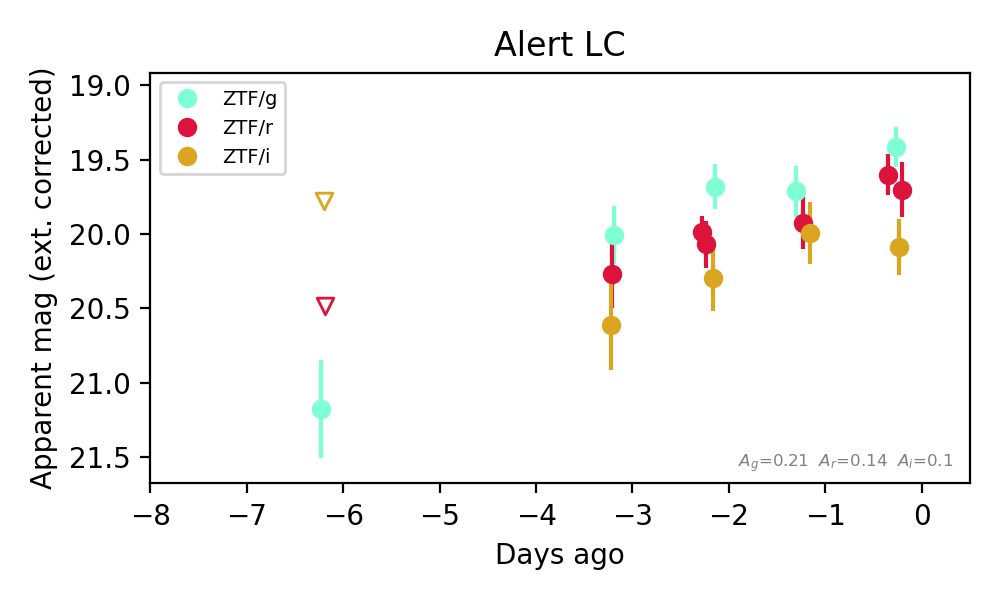
Extinction-corrected gr color:
From alerts: -0.22 +/- 0.17 mag
Extinction-corrected gi color:
From alerts: -0.67 +/- 0.23 mag
Extinction-corrected ri color:
From alerts: -0.45 +/- 0.22 mag
Rise Rate:
g: 0.25 mag/day
r: 0.2 mag/day
Fade Rate:
5. [ZTF] ZTF26abovfzn (FBOT?) [Back to Top] [Share] [Trigger Swift] [Fritz Alert] [Fritz Source] [Lasair]RA, Dec: 188.54108, 15.95854 12h34m9.86s, 15d57m30.73sGalactic (l, b): 282.31842, 78.13322 ext(g-r) = 0.03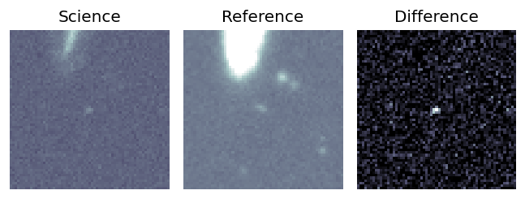
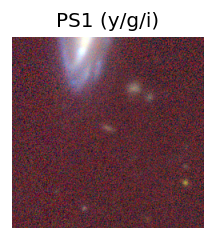
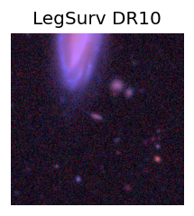
TESS: Sectors 23
SDSS (<15 kpc):Found SDSS phot-z: z=0.26; peak abs mag = -21.74
PS1: 0 sources in 3 arcsec
LegacySurvey: 1 sources in 3 arcsec Closest: d = 0.92 arcsec, 20.2 deg (east of north) photoz=0.24 (68% bounds 0.17, 0.32), type=SER peak abs mag (ext. corrected) = -21.54 (68% bounds -20.78, -22.31)
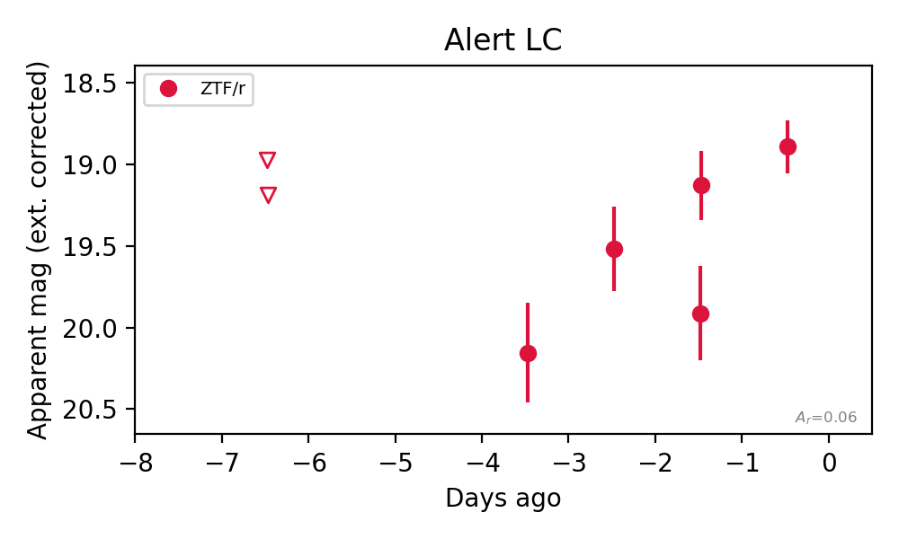
Rise Rate:
r: 0.39 mag/day
Fade Rate:
6. [ZTF] ZTF26abpanks (Afterglow?FBOT?) [Back to Top] [Share] [Trigger Swift] [Fritz Alert] [Fritz Source] [Lasair]RA, Dec: 352.79839, -10.17866 23h31m11.61s, -10d-10m-43.17sGalactic (l, b): 70.98667, -64.61046 ext(g-r) = 0.026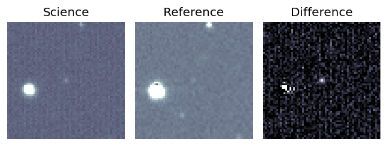
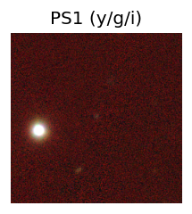
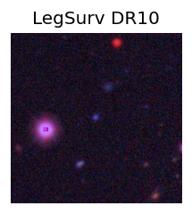
TESS: Sectors [ 2 29 42 92]
SDSS (<15 kpc):Found SDSS phot-z: z=0.89; peak abs mag = -25.00
PS1: 0 sources in 3 arcsec
LegacySurvey: 1 sources in 3 arcsec Closest: d = 0.35 arcsec, 71.3 deg (east of north) photoz=0.8 (68% bounds 0.14, 1.63), type=REX peak abs mag (ext. corrected) = -24.73 (68% bounds -20.3, -26.62)
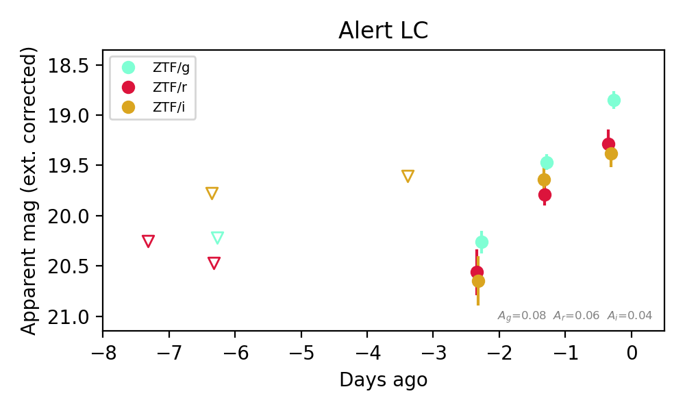
Extinction-corrected gr color:
From alerts: -0.43 +/- 0.17 mag
Extinction-corrected gi color:
From alerts: -0.53 +/- 0.16 mag
Extinction-corrected ri color:
From alerts: -0.1 +/- 0.2 mag
Consistent with synchrotron, g-r>0!
Rise Rate:
g: 0.69 mag/day
r: 0.61 mag/day
i: 0.54 mag/day
Fade Rate:
7. [ZTF] ZTF26abpbjfg (Afterglow?) [Back to Top] [Share] [Trigger Swift] [Fritz Alert] [Fritz Source] [Lasair]RA, Dec: 10.72016, 41.18279 0h42m52.84s, 41d10m58.04sGalactic (l, b): 121.19966, -21.66017 ext(g-r) = 0.415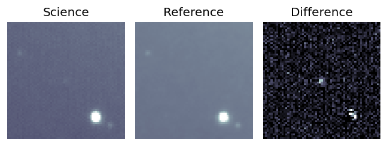
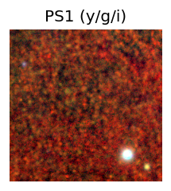

TESS: Sectors [17 57 84]
PS1: 0 sources in 3 arcsec
LegacySurvey: 0 sources in 3 arcsec
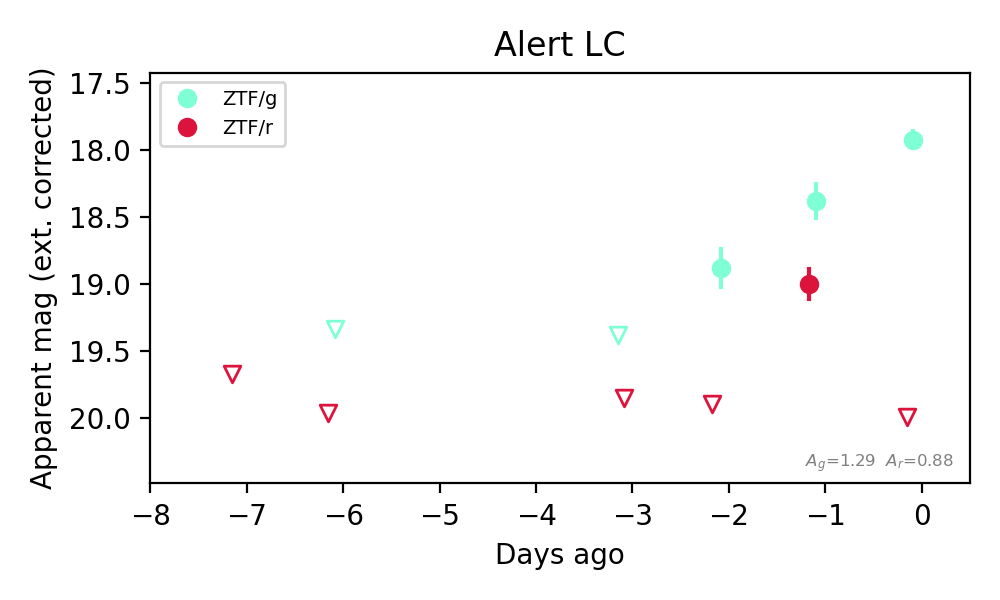
Extinction-corrected gr color:
From alerts: -2.07 +/- 99 mag
Rise Rate:
g: 0.49 mag/day
r: 0.89 mag/day
Fade Rate:
r: 0.97 mag/day
8. [ZTF] ZTF26abpbnxu (FBOT?) [Back to Top] [Share] [Trigger Swift] [Fritz Alert] [Fritz Source] [Lasair]RA, Dec: 356.82178, 4.29217 23h47m17.23s, 4d17m31.83sGalactic (l, b): 94.25181, -54.96723 ext(g-r) = 0.059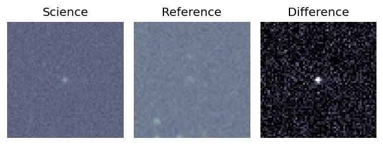
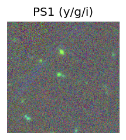
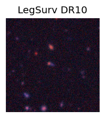
TESS: Sectors [42 70]
SDSS (<15 kpc):Found SDSS phot-z: z=0.55; peak abs mag = -22.89
PS1: 0 sources in 3 arcsec
LegacySurvey: 1 sources in 3 arcsec Closest: d = 0.16 arcsec, 42.9 deg (east of north) photoz=0.11 (68% bounds 0.04, 0.24), type=EXP peak abs mag (ext. corrected) = -18.86 (68% bounds -16.87, -20.77)
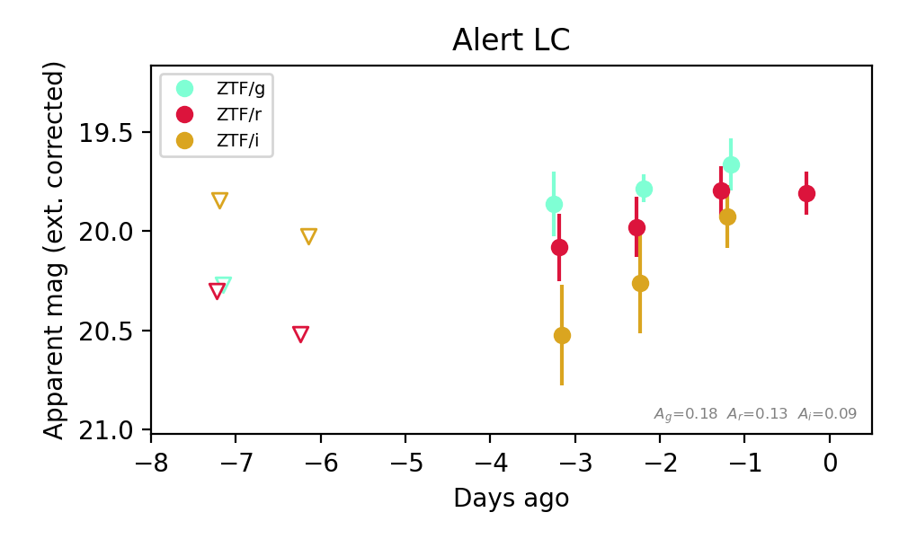
Extinction-corrected gr color:
From alerts: -0.13 +/- 0.18 mag
Extinction-corrected gi color:
From alerts: -0.26 +/- 0.21 mag
Extinction-corrected ri color:
From alerts: -0.13 +/- 0.2 mag
Consistent with synchrotron, g-r>0!
Rise Rate:
g: 0.1 mag/day
r: 0.15 mag/day
i: 0.31 mag/day
Fade Rate:
9. [ZTF] ZTF26abpcwdz (FBOT?) [Back to Top] [Share] [Trigger Swift] [Fritz Alert] [Fritz Source] [Lasair]RA, Dec: 300.2318, 60.73811 20h 0m55.63s, 60d44m17.18sGalactic (l, b): 93.97148, 15.53977 ext(g-r) = 0.107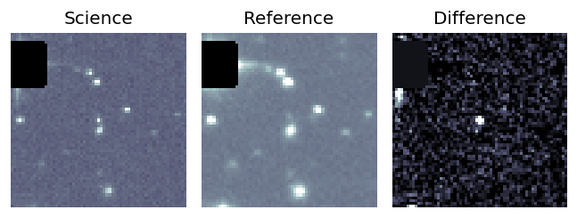
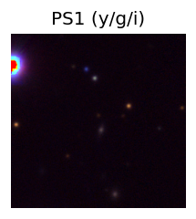

TESS: Sectors [ 14 15 16 17 21 24 41 51 54 55 57 58 74 75 76 77 81 82
84 85 120 121]
SDSS (<15 kpc):Found SDSS phot-z: z=0.21; peak abs mag = -20.56
PS1: 0 sources in 3 arcsec
LegacySurvey: 0 sources in 3 arcsec
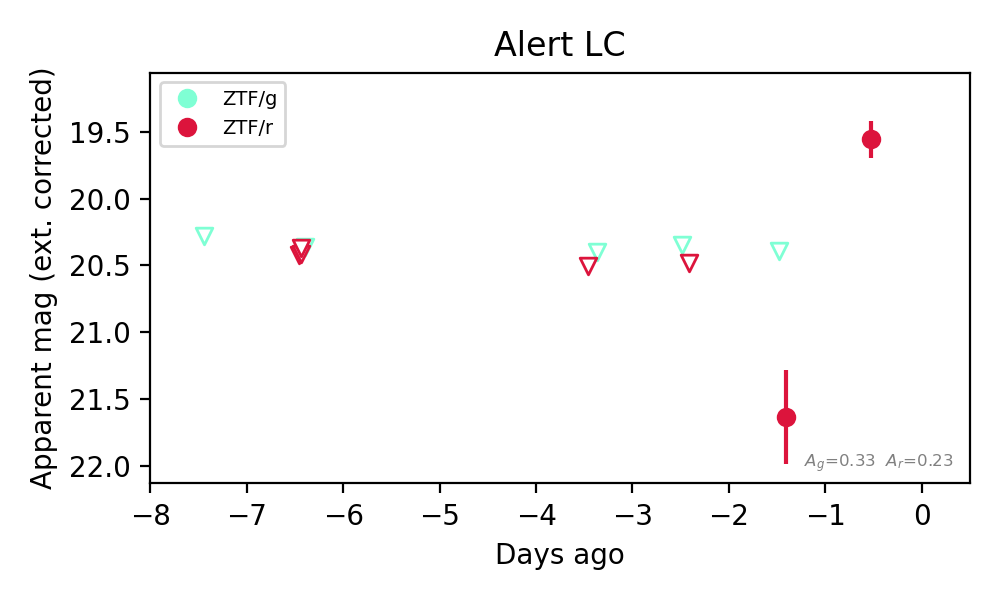
Extinction-corrected gr color:
From alerts: -1.24 +/- 99 mag
Rise Rate:
r: 2.35 mag/day
Fade Rate:
10. [ZTF] ZTF26abpdrwz (Afterglow?) [Back to Top] [Share] [Trigger Swift] [Fritz Alert] [Fritz Source] [Lasair]RA, Dec: 294.44951, 46.94409 19h37m47.88s, 46d56m38.72sGalactic (l, b): 79.75827, 12.18737 ext(g-r) = 0.14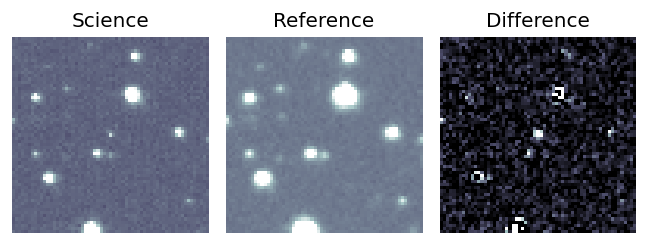
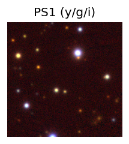

TESS: Sectors [ 14 15 40 41 54 55 74 75 81 119 120 121]
PS1: 0 sources in 3 arcsec
LegacySurvey: 0 sources in 3 arcsec
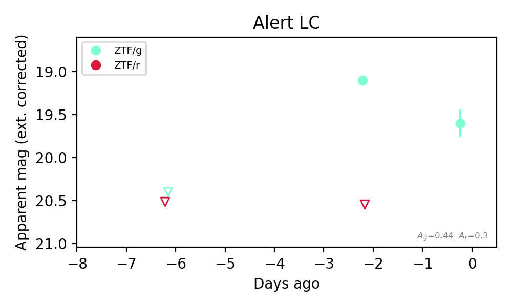
Extinction-corrected gr color:
From alerts: -1.44 +/- 99 mag
Rise Rate:
g: 0.33 mag/day
Fade Rate:
g: 0.25 mag/day
11. [ZTF] ZTF26abpdwbs (Afterglow?) [Back to Top] [Share] [Trigger Swift] [Fritz Alert] [Fritz Source] [Lasair]RA, Dec: 296.89064, 46.4799 19h47m33.75s, 46d28m47.66sGalactic (l, b): 80.13368, 10.48993 ext(g-r) = 0.17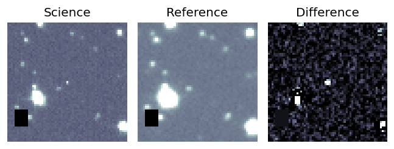

TESS: Sectors [ 14 15 41 54 55 74 75 81 82 119 120 121]
PS1: 0 sources in 3 arcsec
LegacySurvey: 0 sources in 3 arcsec
Extinction-corrected gr color:
From alerts: -1.43 +/- 99 mag
Rise Rate:
g: 0.54 mag/day
Fade Rate:
g: 0.34 mag/day
12. [ZTF] ZTF26abpfcwl (Afterglow?) [Back to Top] [Share] [Trigger Swift] [Fritz Alert] [Fritz Source] [Lasair]RA, Dec: 271.90666, 9.34011 18h 7m37.60s, 9d20m24.40sGalactic (l, b): 36.41421, 13.93731 ext(g-r) = 0.239
TESS: Sectors [ 80 118]
PS1: 0 sources in 3 arcsec
LegacySurvey: 0 sources in 3 arcsec
Extinction-corrected gr color:
From alerts: -1.25 +/- 99 mag
Extinction-corrected gi color:
From alerts: 1.74 +/- 99 mag
Extinction-corrected ri color:
From alerts: 2.99 +/- 0.38 mag
Consistent with synchrotron, g-r>0!
Rise Rate:
i: 1.3 mag/day
Fade Rate:
13. [ZTF] ZTF26abpgasm (FBOT?) [Back to Top] [Share] [Trigger Swift] [Fritz Alert] [Fritz Source] [Lasair]RA, Dec: 309.77423, 3.3271 20h39m5.82s, 3d19m37.58sGalactic (l, b): 49.07794, -22.06902 ext(g-r) = 0.083
TESS: Sectors [55 81]
PS1: 0 sources in 3 arcsec
LegacySurvey: 1 sources in 3 arcsec Closest: d = 0.46 arcsec, 251.3 deg (east of north) photoz=0.76 (68% bounds 0.63, 1.03), type=PSF peak abs mag (ext. corrected) = -23.2 (68% bounds -22.73, -24.02)
Extinction-corrected gr color:
From alerts: 0.11 +/- 99 mag
Extinction-corrected ri color:
From alerts: 0.22 +/- 99 mag
Rise Rate:
r: 1.42 mag/day
Fade Rate:
14. [ZTF] ZTF26abpgjvx (FBOT?) [Back to Top] [Share] [Trigger Swift] [Fritz Alert] [Fritz Source] [Lasair]RA, Dec: 350.79996, 54.7278 23h23m11.99s, 54d43m40.10sGalactic (l, b): 110.33679, -5.97172 ext(g-r) = 0.501
TESS: Sectors [17 24 57 77 84]
SDSS (<15 kpc):Found SDSS phot-z: z=0.28; peak abs mag = -21.86
PS1: 0 sources in 3 arcsec
LegacySurvey: 0 sources in 3 arcsec
Extinction-corrected gr color:
From alerts: 0.1 +/- 99 mag
Rise Rate:
r: 0.27 mag/day
Fade Rate:
15. [ZTF] ZTF26abpjqds (FBOT?) [Back to Top] [Share] [Trigger Swift] [Fritz Alert] [Fritz Source] [Lasair]RA, Dec: 13.79274, -11.45479 0h55m10.26s, -11d-27m-17.24sGalactic (l, b): 126.31431, -74.30201 ext(g-r) = 0.035
TESS: Sectors [ 3 30 97]
PS1: 0 sources in 3 arcsec
LegacySurvey: 1 sources in 3 arcsec Closest: d = 0.66 arcsec, 271.1 deg (east of north) photoz=0.24 (68% bounds 0.21, 0.27), type=SER peak abs mag (ext. corrected) = -20.05 (68% bounds -19.78, -20.34)
Extinction-corrected gr color:
From alerts: -1.11 +/- 99 mag
Rise Rate:
r: 0.64 mag/day
Fade Rate:
16. [ZTF] ZTF26abpjuxc (Afterglow?) [Back to Top] [Share] [Trigger Swift] [Fritz Alert] [Fritz Source] [Lasair]RA, Dec: 8.40991, -14.44768 0h33m38.38s, -14d-26m-51.63sGalactic (l, b): 103.93165, -76.65836 ext(g-r) = 0.027
TESS: Sectors [ 3 30 107]
PS1: 0 sources in 3 arcsec
LegacySurvey: 1 sources in 3 arcsec Closest: d = 3.93 arcsec, 311.5 deg (east of north) photoz=0.82 (68% bounds 0.53, 1.3), type=PSF peak abs mag (ext. corrected) = -24.84 (68% bounds -23.65, -26.06)
Extinction-corrected gr color:
From alerts: -1.09 +/- 99 mag
Extinction-corrected gi color:
From alerts: -0.79 +/- 99 mag
Rise Rate:
g: 1.26 mag/day
r: 0.31 mag/day
Fade Rate:
g: 1.49 mag/day